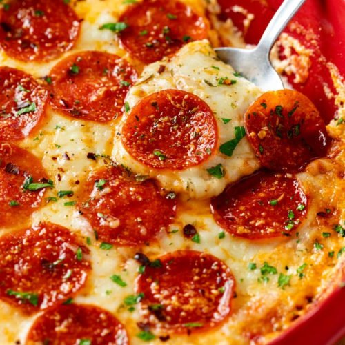

Easy & Quick Homemade Pizza

Description
Making homemade pizza dough can sound like a lot of work, but it’s so worth
the bragging rights. The dough itself requires few ingredients and just a
little bit of rising and rest time. While you wait for the dough to be ready,
you can get to work prepping your tomato sauce, chopping fresh vegetables,
or grating the cheese you’ll put on top. Bake for 15 minutes, garnish with
basil (or, let’s be real, more cheese), and enjoy showing off your
way-better-than-takeout creation.
Ingredients
- 2 1⁄2 cups of flour
- 1 teaspoon of salt
- 1 teaspoon of sugar
- 1 tablespoon of fast rise yeast
- 1 tablespoon of oil
- 2 cloves garlic minced
- 1/4 cup of tomato sauce
- 1 teaspoon of italian seasoning
- 1/2 teaspoon of garlic powder
- 1/2 teaspoon of salt
- 1/8 teaspoon of pepper
- 1 1/2 cups of pepperoni slices
- 1 cup of shredded mozzarella cheese
- 1 cup of shredded monterey jack cheese
- 3 tablespoons of grated parmesan cheese
Steps
-
In large bowl, mix first 4 ingredients.
-
Mix water and oil; add to flour mixture.
-
Turn onto floured surface; knead for 2 minutes.
-
Place in a greased bowl; turning to grease top.
-
Cover and let rise for 20 minutes.
-
Punch down; place on 12in, greased pizza pan.
-
Pat into a circle.
-
Topping: Mix the 7th through 11th ingredients and spread over crust.
-
Put a few pepperoni slices on top of sauce.
-
Sprinkle with 1/2 the mozzeralla; 1/2 the monterey jack, and 1/2 the parmesan.
-
Put the rest of the pepperoni on.
-
Repeat the cheese layer.
-
Bake at 400 degrees for 20 minutes or until light brown.